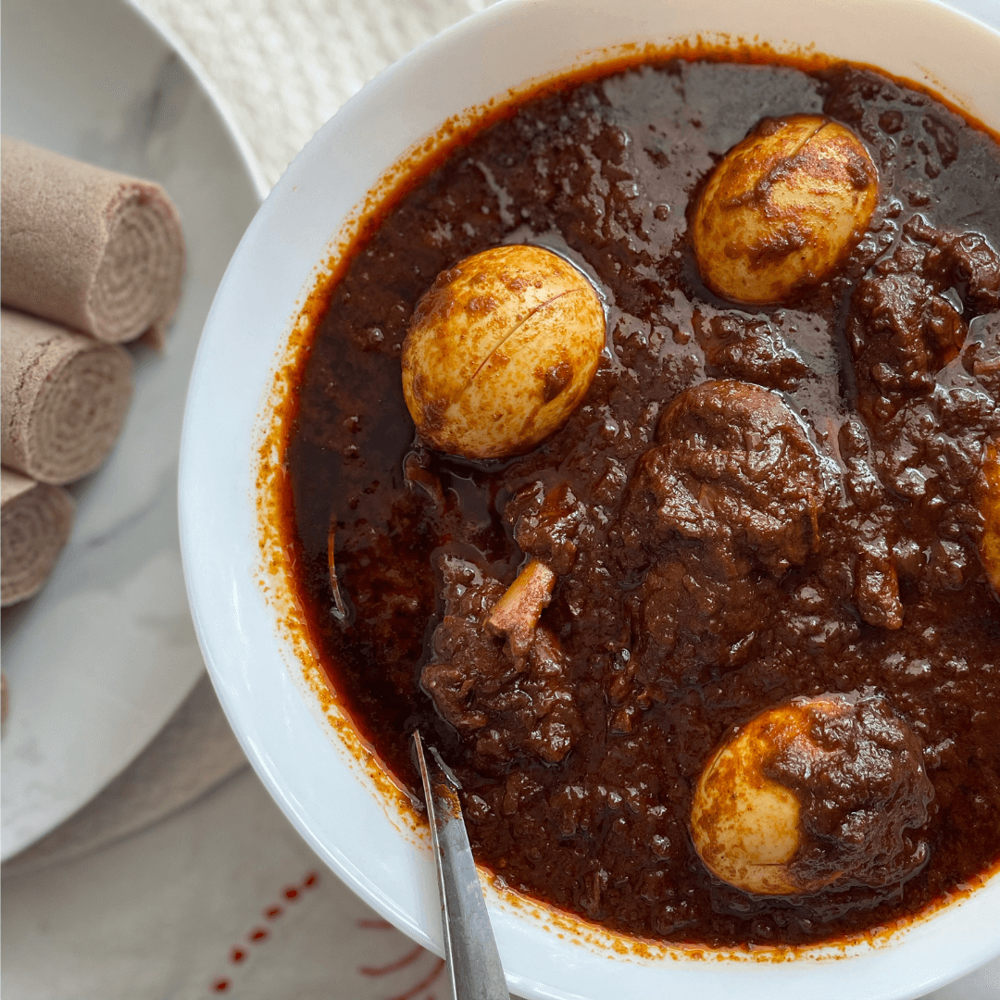

Doro Wot

Doro wot is a spicy, slow-cooked chicken stew, considered the national dish of Ethiopia and Eritrea. The name translates simply to "chicken stew," but the preparation is a labor-intensive process that results in a complex, rich, and flavorful dish.
Ingredients
- Onions = 2 kilos
- Garlic = 2 Cloves
- Ginger powder = 1/2 tablespoon
- Cumen = 1/2 tablespoon
- Paper = 1 Tablespoon
- Salt = 1 1/2 Tablespoon
- Ethiopian Butter = 1/2 kilo
- Berbere = 1/2 kilo
- Eggs = 3
Steps
- Finely chop the onions and cook them with the garlic until brown with cooking oil
- Add the berbere and mix thorouhly with the onion and let it cook for 20 minutes
- Add salt
- Add the chicken and mix it well with the stew. Cook it for 10 minutes
- Add 2 litres of water
- Add Butter
- Add pepper
- Add the Ginger and Cumun
- Cook for 20-30 minutes
- Add the Boiled Eggs
Home